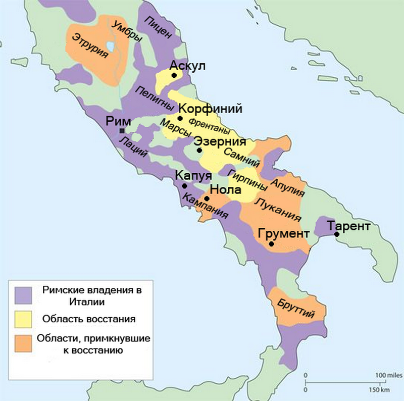

Помпеи – погребенный город
История города Помпеи
Основателями Помпей, по мнению древнегреческого географа Страбона, были оски – один из народов Древней Италии. Уже древние высказывали разные мнения о происхождении названия Помпеи. Одни возводили его к триумфальному шествию (помпе) Геркулеса после победы над Герионом. Другие – к оскскому слову «пять» (пумпэ). По этой версии Помпеи были образованы как объединение пяти общин [1].
В IV в. до н. э. Помпеи стали частью Самнитской федерации. Город служил портом для самнитских городов, располагавшихся выше по реке Сарно. В это же время между Римской республикой и самнитами прошла серия войн. В ходе них в 310 г. до н. э. недалеко от Помпей высадился римский десант. Римляне опустошили земли соседней с Помпеями Нуцерии. Позже жители сельской округи Помпей напали на возвращавшихся с награбленной добычей легионеров, отняли награбленное и загнали их на корабли. Римляне победили и покорили своей власти самнитов и их союзников. Отныне Помпеи наряду с другими кампанскими городами стали частью Римско-италийской конфедерации. В городе сохранялось самоуправление. Помпеи должны были быть союзниками Рима, а также предоставлять вспомогательные войска.
Парадоксально, но стимул развитию Помпей придала война Рима с Ганнибалом (с 218 по 201 г. до н. э.). После перехода через Альпы и побед над римскими войсками карфагенский полководец вторгся в Кампанию. Капуя, сильнейший город региона, перешла на его сторону. Нуцерия сохранила верность Риму и была за это уничтожена Ганнибалом. В ходе войны римляне взяли Капую и разрушили город.
Сами Помпеи не были взяты карфагенянами и стали убежищем для беженцев из других кампанских городов.
Элита кампанского города получила свою долю богатства от экспансии Рима в Средиземноморье во II в. до н. э. Сохранились свидетельства о контактах помпейских купцов с восточными рынками. В частности, с островом Делос, откуда в Помпеи попадают восточные пряности [1].
В 91 г. до н. э. ряд италийских общин (включая Помпеи) восстал против Рима. Этот конфликт вошел в историю как Союзническая война. Восставшие против Рима союзники добивались равного с римлянами статуса в государстве. После трех лет войны римляне разгромили мятежных союзников. Но после этого они дали им права римского гражданства.
В 89 г. до н. э. в ходе войны Помпеи осадил римский полководец Луций Корнелий Сулла. В серии битв недалеко от города Сулла разбил кампанского полководца Клуенция, пытавшегося снять осаду Помпей. Город сдался вскоре после разгрома и гибели Клуенция.
Помпеи не были разрушены и получили римское гражданство. Через 10 лет Сулла, одержавший победу над своими противниками и ставший диктатором, основал в городе колонию своих ветеранов. Отныне Помпеи получили статус римской колонии, и прежних оскских магистратов сменили новые римские. Делопроизводство в городе переносится на латинский язык. И в последний век города сокращается число записей на оскском [1].
Таким образом, Помпеи основали оски. Существует две легенды появления названия города. Помпеи нередко участвовали в войнах, которые придавали стимул для развития города: накопление богатства, налаживание торговых связей с восточными рынками, а также смогли получить римское гражданство. Однако были и негативные последствия войн, которые привели к утрате родного языка делопроизводства, что указывает на подчинение Риму.
Галерея